01
Poesía y juegos · 2 min
Contrastes entre el pasado y el presente
Antes era todo más lento. Pero ahora ocurre en un abrir y cerrar de ojos.
Leer el textoRELATOS · POEMAS · RECUERDOS
Una vida. Muchas historias.
Un libro para leer sin prisa.
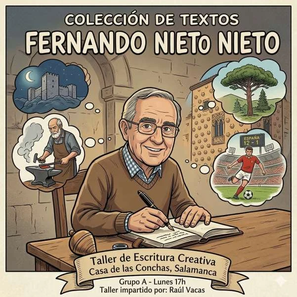
EL PRÓLOGO
Por Juan José Nieto Lobato.
LA COLECCIÓN
Elige una historia.
El resto puede esperar.
24 textos para descubrir
Poesía y juegos · 2 min
Antes era todo más lento. Pero ahora ocurre en un abrir y cerrar de ojos.
Leer el texto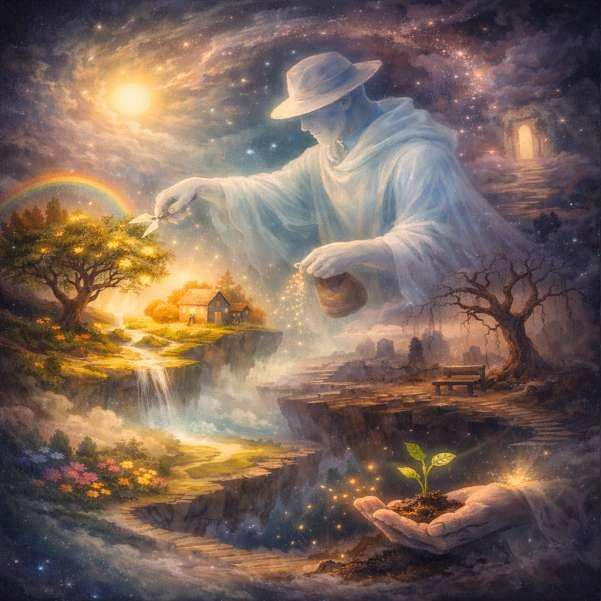
02Poesía y juegos · 1 min
Es un artesano invisible que modela paisajes sentimentales en el vasto universo de la mente humana.
Leer el texto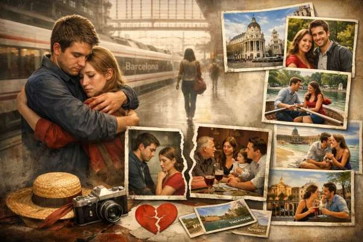
03Historias · 2 min
En la bulliciosa estación de Atocha, María y Juan se despidieron para oficializar todo. Con un nudo en la garganta, María vio partir el tren…
Leer el texto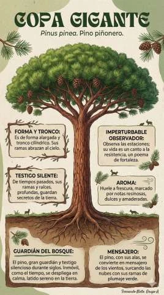
04Poesía y juegos · 1 min
Pinus pinea. Pino piñorero.
Leer el texto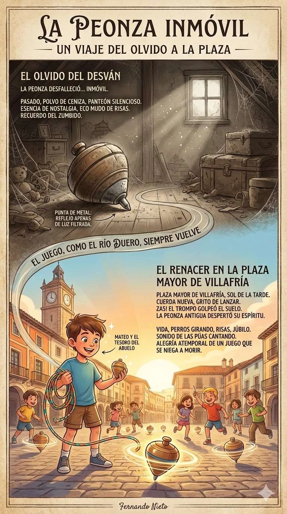
05Memoria y raíces · 2 min
La peonza desfalleció y quedó inmóvil. Hace mucho que el tiempo había pasado sobre ella. Ahora solo era una figura de madera abollada, cubierta…
Leer el textoHistorias · 4 min
Mateo, de 55 años, arquitecto técnico, no se sentía enfermo. Quizás se levantaba una vez por las noches para ir al baño; lo atribuía a la edad y…
Leer el texto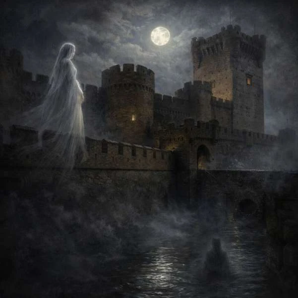
07Historias · 4 min
El castillo de la Mota, en Medina del Campo, no es solo una fortaleza. Es casi una persona: un viejo gigante de ladrillo que observa la meseta,…
Leer el texto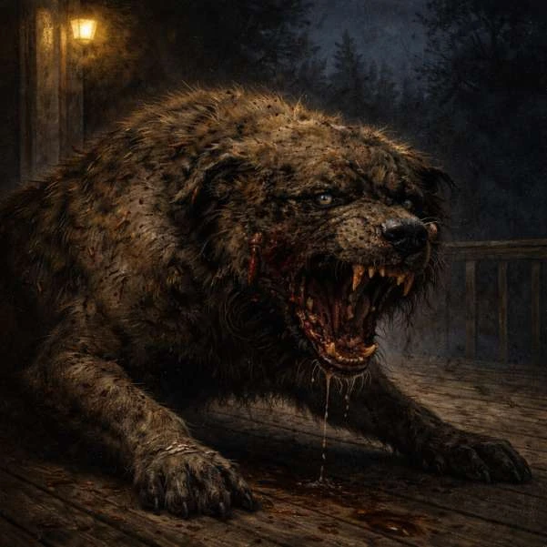
08Historias · 4 min
Primero era un crujido de ramas secas, lento y deliberado, proveniente de los arbustos que bordeaban el camino de entrada. Me levanté, sintiendo…
Leer el textoCartas · 2 min
Doña Remedios Sanitas:
Leer el textoCartas · 1 min
Señora Directora de La Voz de Valdeconchas del Páramo,
Leer el texto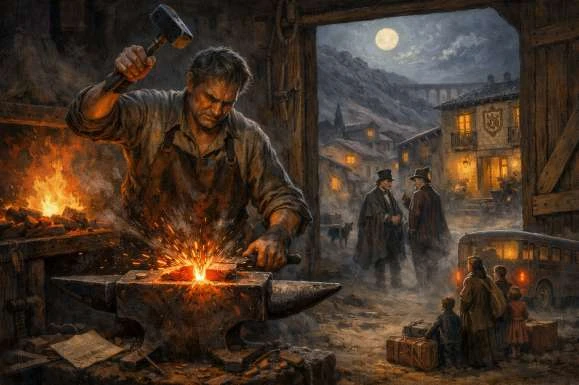
11Memoria y raíces · 5 min
El viento del norte venía a cuchillo por la sierra de Albarracín, colándose por las callejuelas de Gea, como un lamento antiguo. No traía lluvia…
Leer el texto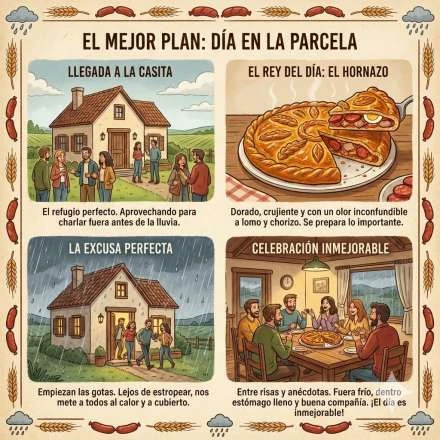
12Memoria y raíces · 2 min
Empieza la mañana del Lunes de Aguas y el cielo de Salamanca amanece un poco gris. Es uno de esos días de primavera en los que el tiempo no…
Leer el texto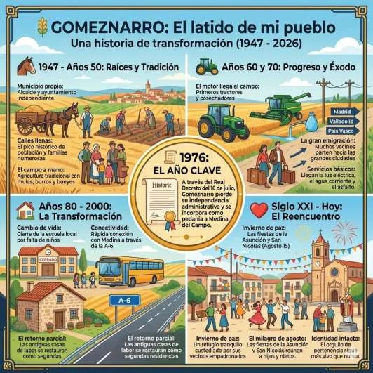
13Memoria y raíces · 4 min
Gomeznarro es un pequeño municipio de la provincia de Valladolid, situado al sur de la provincia, muy cerca de los límites con la provincia de…
Leer el texto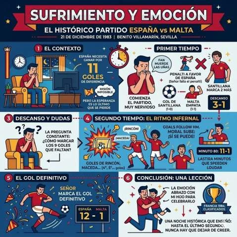
14Memoria y raíces · 2 min
Era un 21 de diciembre de 1983, una noche fría en el exterior, pero dentro de casa yo estaba con muchos nervios y con la mirada clavada en la…
Leer el texto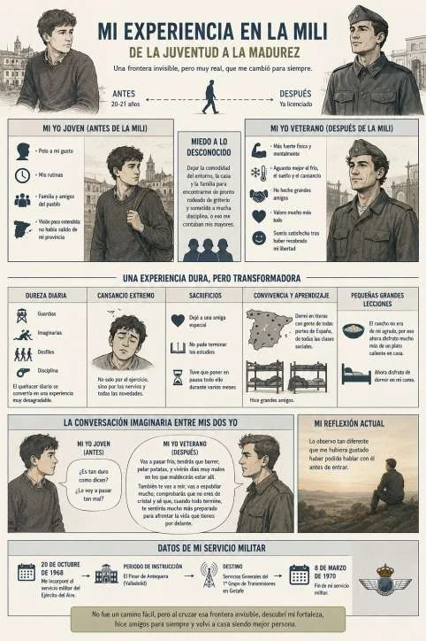
15Memoria y raíces · 3 min
La mili representó una frontera invisible, pero muy real, entre la juventud y la edad adulta. Yo tenía 20 o 21 años, no recuerdo bien; el pelo a…
Leer el texto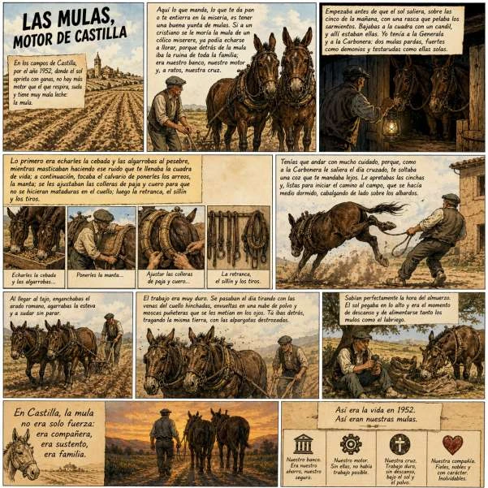
16Memoria y raíces · 2 min
En los campos de Castilla, por el año 1952, donde el sol aprieta con ganas, no hay más motor que el que respira, suda y tiene muy mala leche: la…
Leer el texto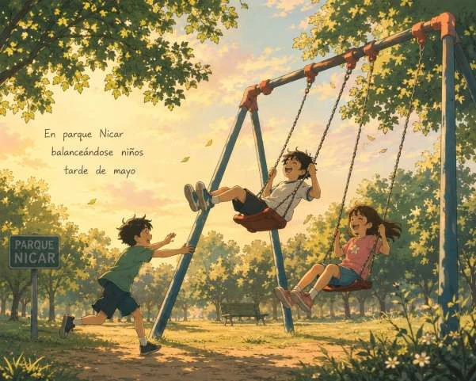
17Poesía y juegos · 1 min
En parque Nicar
Leer el textoPoesía y juegos · 1 min
Un día, Juan caminaba por la playa y miró la luz a lo alto. Un pájaro volaba muy rápido; su canto daba paz a su alma.
Leer el textoPoesía y juegos · 1 min
Pintoresco pintor pinta por poco precio preciosos paisajes para personas poco pudientes.
Leer el texto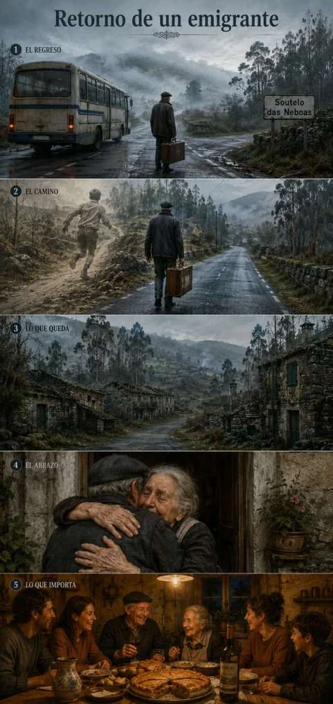
20Historias · 2 min
El autobús le dejó en el cruce de Soutelo das Neboas (Soutelo de las Nieblas). La bruma de la mañana se mezclaba con las ramas de los árboles.
Leer el texto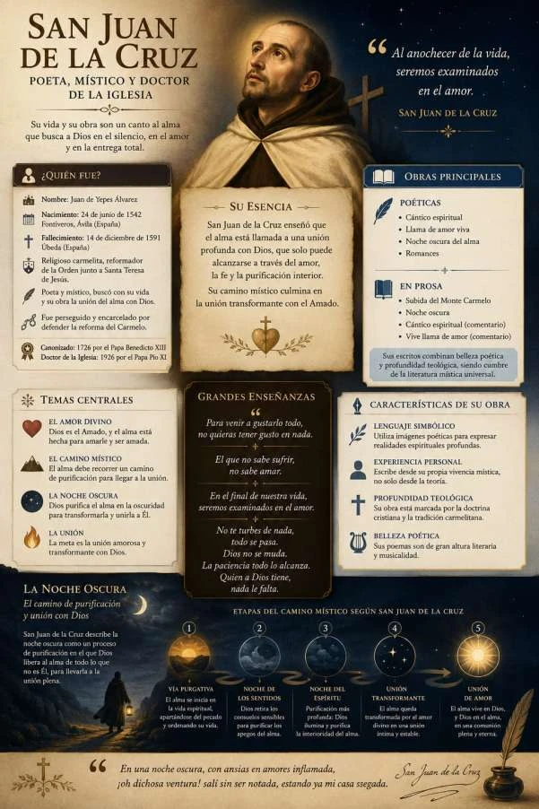
21Historias · 2 min
Aquella noche entré en la oscuridad como quien atraviesa una puerta invisible. No había luna ni estrellas que señalaran el camino. Todo era…
Leer el texto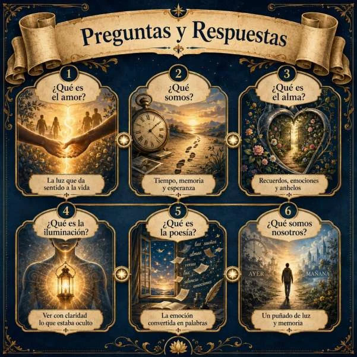
22Poesía y juegos · 1 min
¿Qué es el amor?
Leer el texto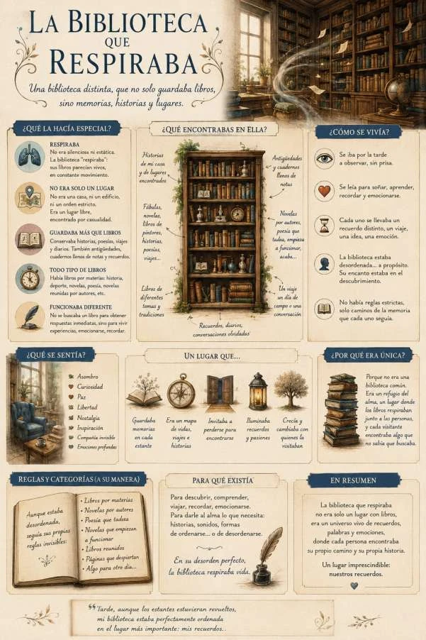
23Historias · 2 min
Una mañana decidí poner orden en mi biblioteca. Miré los estantes de cada uno de los distintos lugares de mi casa y pensé que ya era hora de que…
Leer el texto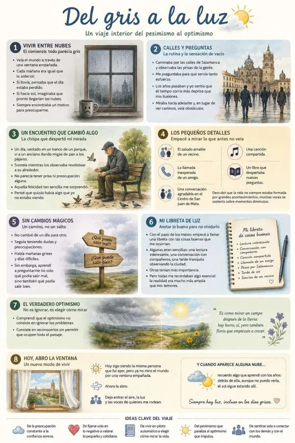
24Historias · 3 min
Hubo un tiempo en que yo veía el mundo a través de una ventana empañada. Cada mañana parecía una repetición de la anterior. Si llovía, pensaba…
Leer el textoPrueba otra palabra o vuelve a ver la colección completa.
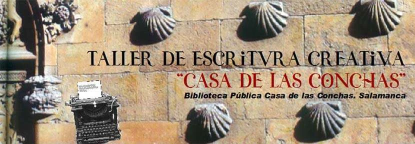
EL LUGAR DONDE NACIERON
Esta colección reúne los textos de Fernando Nieto Nieto para el Taller de Escritura Creativa de la Casa de las Conchas, en Salamanca, impartido por Raúl Vacas durante el curso 2025–2026.
Relatos, poemas, cartas y juegos con las palabras. La edición original se recopiló el 26 de junio de 2026.
Guardar el libro original en PDF (2,4 MB)